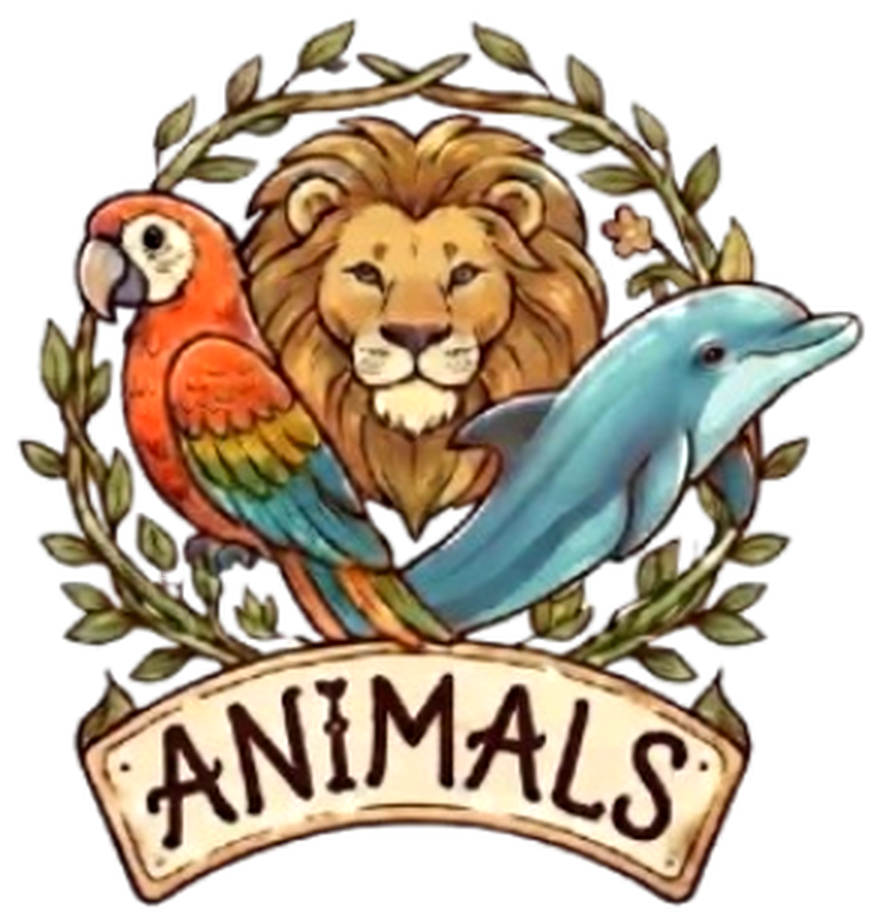

GAME RULES
2 to 7 players · Classic edition
Welcome to Animals
Deep in the forest there is room for everyone. Monkeys, parrots, dolphins and lions are
looking for a quiet place to call home, and they all go crazy for the same thing:
acorns.
Each player looks after their own sanctuary. You start with a handful of acorns and three
very friendly, rather sleepy sloths. Turn by turn you will invite new animals by offering
them acorns, and each one will help you with its ability so that more friends can come.
Goal
Gather the collection of cards worth the most victory points (VP)
when the last round ends.
Contents
| Cards | Copies |
|---|
| 21 species costing 4 or less | 9 of each |
| 12 species costing 5 or more | 7 of each |
| Sloths | 21 |
| Acorns of value 1 | 49 |
| Acorns of value 2 | 16 |
| Acorns of value 3 | 11 |
| Acorns of value 5 | 8 |
378 cards in total.
2
Animal cards
1Cost. The acorns you offer so it comes to your sanctuary. The Parrot costs 3.
2Victory points. What it is worth at the end of the game. The Parrot is worth 2 VP.
3Name of the species.
4Habitat. An animal can have one or several.
5Ability. It applies every time you play the card from your hand.
The three habitats
Land
Flying
Aquatic
An animal with several habitats counts for all of them. The Duck is both flying and aquatic.
Example. You play the Parrot with a Duck in your hand. The Parrot counts itself and
counts the Duck: you have 2 flying animals, so you get +2 acorns for this turn.
3
Acorns
Every animal loves acorns. Acorn cards have no name and no text: their value is
the number carved on the acorn.
An acorn is never played. It stays in your hand and adds its value to the acorns
you can offer this turn.
The acorn of value 1 cannot be taken from the market, so its cost is a dash. It gives no points either.
| Acorn | Value | Cost | VP |
|---|
| Red panda | 1 | – | 0 |
| Sloth | 2 | 3 | 1 |
| Squirrel | 3 | 5 | 2 |
| Koala | 5 | 7 | 3 |
Acorn cards and ability acorns
Many abilities say “+2 acorns”. That does not give you a card: it only raises the
acorns you can offer this turn. Any you do not use are lost.
Your capture value is the sum of the acorns in your hand and the acorns your
abilities give you.
The Sloth
Cost 0 and 0 VP. It does nothing when played, but it protects you: when an opponent's card
makes you discard, you may discard a Sloth instead of everything you were asked for.
4
Setup
- Starting deck. Each player takes 7 acorns of value 1 and 3 Sloths.
Shuffle those 10 cards and place them face down: this is your deck.
- The market. Place one face-up pile per species in the middle, with these copies:
| Species | Copies in the pile |
|---|
| Cost 4 or less | players + 2 |
| Cost 5 or more | one per player |
With 4 players that is 6 and 4 copies. Leftover cards go back in the box.
- The acorns. Make three piles with the acorns of value 2, 3 and 5. Leftover
acorns of value 1 and Sloths go back in the box.
- Starting hand. Every player draws 5 cards from their deck.
- First player. Whoever saw a wild animal most recently goes first. Play goes
clockwise.
Your play area
- Deck: face down, on your left.
- Discard pile: face up, on your right. Everything you capture goes here.
- Collection: all your cards, whether in your deck, hand or discard pile.
Choose the type of game before setting up the market. See page 8.
5
Your turn
On your turn you may play animals and capture cards, in any order and switching between
the two. When you are done, end your turn.
Squirrel. First of all, if you have Squirrels in your discard pile, one returns to
your hand. Only one per turn.
Playing animals
Place animals from your hand in front of you, one at a time or several at once, and
apply their abilities one by one. Play as many as you like, or none.
When an ability mentions “your hand”, it counts the cards in your hand at that
moment and the ones you have already played this turn, including the card itself. If you
play a Monkey and a Platypus, each one counts the other. Animals you draw later do not count.
If an ability cannot be fully carried out, do as much as you can.
Capturing
Add up your capture value and use it in the market:
- You may capture several cards in the same turn if you have enough for all of them.
- You may also take acorns of value 2, 3 and 5.
- Only one card of each kind per turn: not two animals of the same species, and not
two acorns of the same value.
- Everything you capture goes to your discard pile, not to your hand.
The acorn cards you use are not lost: they are discarded at the end of the turn, like
the rest of your hand.
Animals from the Elephant, the Spider or the Flamingo do not count towards
that limit, nor do acorns from the Penguin or the Turtle.
6
End of your turn
- Put the animals you played and all the cards left in your hand, acorns included,
in your discard pile.
- Draw 5 new cards. You will hold them during the other players' turns.
- The player on your left takes the next turn.
When your deck runs out
If you have to draw and your deck is empty, shuffle your discard pile and place it face
down as your new deck. Then keep drawing. This is how the animals you captured come back to
your hand.
A round
A round ends when every player has taken one turn. Keep track of the rounds on paper or
with a die.
Example turn. Your hand is Parrot, Parakeet and three acorns of value 1.
You play the Parrot. The Parakeet counts as 2 flying animals and the Parrot as 1, so you
get +3 acorns. With your three acorns of value 1 your capture value is 6.
You capture a Penguin for 3 and a Dolphin for 3. Both go to your discard pile.
You discard your whole hand and the Parrot you played, and draw 5 cards.
7
Types of game
Choose one before you start. The game always ends when the last round is over, so
everyone plays the same number of turns.
| Game | Market | Rounds |
|---|
| Learning | Only species costing 4 or less | 10 |
| Intermediate | Only species costing 6 or less | 12 |
| Full | All species | 15 |
| Custom | Whichever you like | Your choice |
Learning game (optional)
Set up only the 21 species
costing 4 or less and the three acorn piles. The 12 expensive species stay in the box.
The cards are simpler and hardly any of them score in a special way, so final scoring is
quick.
Intermediate game
The 30 species costing 6 or less and 12 rounds. The Eagle, the Orca and the Polar
Bear stay in the box.
Full game
All species and 15 rounds. There is time for decks to grow and for expensive cards to be
played several times.
Custom game
Feel free to play as many rounds as you like, with the animals you like. If you do not
enjoy a card, simply leave it out of your games.
If a market pile runs out, that card can no longer be taken. The game
carries on as normal until the last round.
8
End of the game
When the last player finishes their turn in the last round, the game ends. Each player
gathers their whole collection: deck, hand and discard pile.
Scoring
- Crocodiles. For each Crocodile you have, remove one non-flying animal from your
collection. The removed card scores nothing and counts for nothing.
- Printed points. Add up the VP on the shield of all your
cards, animals and acorns.
- Collection points. Add the points from the cards on the next page.
The player with the most points wins.
Tiebreaker
If there is a tie on points, the tied player with the most animals in their
collection wins.
If they are also tied on animals, they share the victory.
Questions about the Crocodile
- Each Crocodile removes one different card. Two Crocodiles cannot remove a
single Goldfish, even though it counts as 2 aquatic animals.
- If your only non-flying animal is the Crocodile itself, it removes itself.
9
Scoring cards
These six cards give extra points depending on the rest of your collection.
| Card | +1 VP for each… |
|---|
| Eagle | flying animal |
| Polar Bear | land animal |
| Orca | aquatic animal |
| Albatross | different animal species |
| Toucan | animal costing 5 or more |
| Shark | acorn card, whatever its value |
How to count
- Count your whole collection, not just your hand.
- The card counts itself. The Eagle is a flying animal and the Toucan costs 5.
- Each copy scores separately. With 2 Eagles and 6 flying animals you score 6 + 6 = 12 VP.
- An animal with several habitats counts for each of them. The Albatross is land, flying
and aquatic.
- The Parakeet counts as 2 flying animals and the Goldfish as 2 aquatic animals.
- Cards from your starting deck count too. Your acorns of value 1 count for the
Shark. Your Sloths count as land animals for the Polar Bear and as one more species for
the Albatross.
- Several copies of the same species count only once for the Albatross.
10
Scoring example
At the end of the game, this is Martha's collection:
| Cards | Printed VP |
|---|
| 1 Eagle | 2 |
| 2 Parrots | 2 + 2 |
| 1 Parakeet | 1 |
| 1 Duck | 1 |
| 1 Monkey | 3 |
| 1 Polar Bear | 0 |
| 1 Shark | 0 |
| 3 Sloths | 0 |
| 7 acorns of value 1 | 0 |
| 2 acorns of value 2 | 1 + 1 |
| Printed points | 13 |
- Eagle: Eagle, 2 Parrots, Duck and Parakeet, which counts double. That is 6 flying animals: +6.
- Polar Bear: Polar Bear, Monkey and 3 Sloths. That is 5 land animals: +5.
- Shark: 9 acorn cards: +9.
Martha's total: 13 + 6 + 5 + 9 = 33 VP.
For the tiebreaker, Martha has 11 animals in her collection.
11
Card clarifications
Flamingo
You return an animal to its market pile and take another of a different species
costing at most 2 acorns more. The new animal goes to your discard pile.
- You may use the animal before exchanging it. Play that animal first, apply its
ability, then play the Flamingo to exchange it.
- It can be used on itself: you return the Flamingo and take an animal costing 5
or less.
- The card you return stays in the market, and you may capture it with acorns that same turn.
- You may exchange a Sloth for an animal costing 2 or less. That Sloth goes to the
box, not to the market: Sloths can never be captured.
- The exchange is free: it uses no capture value.
Turtle
Exchange an acorn in your hand for the next tier: 1 to 2, 2 to 3, or 3 to 5.
- You exchange the acorn before using it. The acorn you return goes to its market
pile, or to the box if its value is 1.
- The acorn you get goes to your hand and you may use it this same turn.
- An acorn of value 5 cannot be upgraded.
Penguin
Take the acorn of value 2 from its pile. It goes to your hand, so you may use it this
same turn. After that it is one more card in your collection.
12
Discard cards
The Hyena, the Snake and the Vulture make opponents discard. Each card goes to
its owner's discard pile.
General rule. If there is a tie or several possible cards, the choice
always belongs to the owner of the card being discarded, never to whoever played the animal.
Hyena
Each opponent reveals their hand and discards their highest-cost animal. If several are
tied for the highest cost, they choose which one. A player with no animals discards nothing.
Snake
Each opponent chooses an animal from their hand and discards it. Then you choose one
of those animals and apply its ability as if you had played it. The card does not change owner.
If you choose a Flamingo, the animal you exchange must be one of your own, never the
other player's Flamingo.
Vulture
Each opponent chooses 2 cards from their hand and discards them. They can be animals or acorns.
Duck
The player you choose decides which acorn to give you. That acorn goes to your hand
and is yours for the rest of the game. If they have no acorns, they just reveal their hand.
Sloth
Against the Hyena, the Snake or the Vulture you may discard one Sloth instead of what
you are asked for. A single Sloth covers both cards of the Vulture. It does not work against the Duck.
13
Other cards
Giraffe and Bat
The card you retrieve goes to your hand and you may play it this turn. You may retrieve a
card you have just obtained: everything you get goes straight to your discard pile,
whether with acorns, with the Spider or with the Elephant.
Rabbit
Reveal the top card of your deck. If it is an acorn or an animal costing 4 or less, it goes
to your hand. If it is a more expensive animal, it stays on top of your deck. If your deck is
empty, first shuffle your discard pile to form a new deck.
Tiger
Draw 2 cards, then put any one card from your hand on top of your deck. It does not have to
be one of the cards you just drew.
Elephant and Spider
The animal you choose from the market is free and goes to your discard pile. Its ability is
not applied.
Seal
You may combine its 3 acorns with others and split them among several cards. The only
condition is that the Seal's acorns are used on aquatic animals.
Monkey, Platypus and Raven
The Monkey counts land animals and the Platypus counts different species. With
2 Sloths, a Monkey and a Platypus, the Monkey gives +4 acorns and the Platypus +3.
The Raven counts acorn cards, not their value.
14
Quick reference
Setup
- Each player: 7 acorns of value 1 and 3 Sloths. Shuffle and draw 5.
- Market piles: players + 2 copies if the cost is 4 or less, one copy per player if it is
5 or more.
Your turn
- If there is a Squirrel in your discard pile, it returns to your hand.
- Play animals and capture cards, in any order. Only one card of each kind per turn.
- Captured cards go to your discard pile.
- Discard everything and draw 5 cards.
Length
| Learning | cost 4 or less | 10 rounds |
| Intermediate | cost 6 or less | 12 rounds |
| Full | all cards | 15 rounds |
Scoring
- Each Crocodile removes one non-flying animal.
- Add up the printed VP of your whole collection.
- Add Eagle, Polar Bear, Orca, Albatross, Toucan and Shark.
- Tie: most animals in the collection. If still tied, shared victory.
15
Credits
A game created by
Gemma and Diego
Thank you to everyone who supported us and helped make this game happen.
To those who tried the first versions, put up with games played with half-finished cards
and kindly told us what was not working. To those who suggested animals, abilities and
rules. And to those who simply sat down to play one more game.
This game is yours too.
Thanks for playing!
© 2026 Gemma and Diego. All rights reserved.
Developed with the help of artificial intelligence.
16